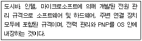
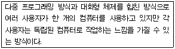
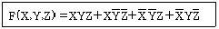
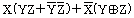
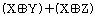
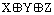
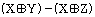
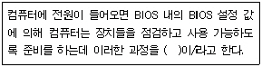

PC정비사-1급 (2006-09-24 기출문제)
1과목: PC운영체제
1. Linux에서 모든 파일의 목록과 자세한 사항을 내림차순으로 정렬하기 위한 명령은?
- ls -alc
- ls -als
- ls -alr
- ls -alf
(정답률: 알수없음)

2. 특정 디스크에서 임의의 파일을 찾아보려고 할 때 사용되는 방법이 잘못된 것은?
- 바탕화면에서 <Windows>+<F3>키를 누른다.
- 시작메뉴에서 [검색]을 클릭한다.
- 내 컴퓨터에서 오른쪽 마우스 버튼을 누른 후 <S>키를 누른다.
- 윈도우즈 탐색기에서 <Ctrl>+<E>키를 누른다.
(정답률: 64%)
3. 다음에 설명하는 용어는?

- APM(Advanced Power Management)
- ACPI(Advanced Configuration and Power Interface)
- ESCD(Extended System Configuration Data)
- DMI(Desktop Management Interface)
(정답률: 70%)
4. 다음에 설명하는 운영체제는?

- job by job방식
- 실시간 시스템
- 시분할 시스템
- 다중 프로그래밍 방식
(정답률: 알수없음)
5. Windows XP에서 제공하는 시스템 복원 기능을 통하여 복원할 수 없는 것은?
- 드라이버
- 문서 파일
- Windows용 시스템 파일
- 레지스트리
(정답률: 100%)
6. Windows XP에서 폴더 공유를 설정하려고 한다. 이에 대한 설명 중 잘못된 것은?
- 최대 100명 까지 설정한 클라이언트 수까지 접근을 허용할 수 있다.
- 공유된 폴더에 접근 할 수 있는 그룹 및 사용자를 지정 할 수 있다.
- 명령 프롬프트에서 'net share'명령으로 컴퓨터의 공유된 전체 폴더를 확인할 수 있다.
- 관리 목적으로 공유된 경우 사용 권한을 설정할 수 없다.
(정답률: 알수없음)
7. 원격지원 서비스에 대한 설명 중 잘못된 것은?
- 인터넷을 이용하여 도움 받을 사람의 컴퓨터에 원격으로 접속하여 제어를 할 수 있도록 한다.
- Windows XP 이상의 운영체제가 필요하다.
- 상대방의 IP 주소만 알고 있어도 도움 요청이 가능하다.
- [시작]-[모든 프로그램]-[원격지원]을 선택하여 사용한다.
(정답률: 64%)
8. Windows XP의 명령 프롬프트 창에서 컴퓨터의 ‘장치관리자’를 실행 시키려고 한다. 이에 해당하는 명령은?
- Dfrag.msc
- Devmgmt.msc
- Msconfig.exe
- Rsop.msc
(정답률: 65%)
9. Windows의 시작버튼을 누르면 즐겨찾기, 실행, 문서 등의 여러 가지 메뉴를 볼 수 있다. 일반 응용 프로그램이나 유틸리티들을 설치하면 프로그램 메뉴 항목에 등록되는데, 이 항목을 없애기 위하여 사용하는 레지스트리 키에 해당하는 것은?
- HKEY_CURRENT_USER\Software\Microsoft\Windows\CurrentVersion\Policies\Explorer DWORD : NoCommonGroups
- HKEY_CURRENT_USER\Software\Microsoft\Windows\CurrentVersion\Policies\Explorer DWORD : NoFavoritesMenu
- HKEY_CURRENT_USER\Software\Microsoft\Windows\CurrentVersion\Policies\Explorer DWORD : NoLogOff
- HKEY_CURRENT_USER\Software\Microsoft\Windows\CurrentVersion\Policies\Explorer DWORD : NoRecentDocsMenu
(정답률: 50%)
10. Windows XP의 네트워크 구성요소에서 사용되는 프로토콜이 아닌 것은?
- TCP/IP
- NETBEUI
- IPX/SPX
- RIP
(정답률: 63%)
11. Windows XP에서 기본적으로 제공하는 아웃룩 익스프레스의 특징으로 잘못된 것은?
- 여러 개의 메일 및 뉴스 계정 관리
- 메일을 받은 사람에게 읽음 확인 메일 요청 기능
- 보안 메시지 보내기와 받기
- 실시간 메시지 교환을 위한 Telnet 계정 생성 및 운영
(정답률: 74%)
12. Windows XP에서 사용자 컴퓨터의 부팅 환경을 설정할 수 있는 파일은?
- boot.ini
- boot.sys
- bootlog.txt
- bootlog.sys
(정답률: 69%)
13. Windows XP의 ‘net’ 명령에 대한 설명으로 잘못된 것은?
- net start : Windows에서 실행되고 있는 서비스를 열거한다.
- net view : 현재 도메인 혹은 네트워크상의 컴퓨터 목록을 보여준다.
- net send : 메시지를 네트워크상의 다른 사용자나 컴퓨터에 보낼 수 있다.
- net config : 현재 컴퓨터의 IP 설정을 확인하여 볼 수 있다.
(정답률: 34%)
14. 파일 전송만을 위한 인터넷 서비스(프로토콜)는?
- FTP
- SMTP
- HTTP
- PHP
(정답률: 74%)
15. HDD 전문 백업 프로그램으로, 파티션 정보를 포함한 HDD백업이 가능하고 네트워크를 이용한 백업 및 복구가 가능한 프로그램은?
- GOPHER
- GHOST
- TOOLKIT PRO
- 하이퍼터미널
(정답률: 67%)
2과목: PC주변기기
16. 주기억장치의 일반적인 특성이 아닌 것은?
- 반도체 소자를 주로 사용한다.
- 비휘발성이다.
- 보조기억장치에 비해 속도가 빠르다.
- SDRAM, DDR-SDRAM, RDRAM등이 사용된다.
(정답률: 82%)
17. 하드디스크에 대한 일반적인 설명과 가장 거리가 먼 것은?
- 하드디스크의 접속방식에는 EIDE, SCSI, SATA 등이 있다.
- 하드디스크의 실린더와 섹터의 수는 논리적으로 만들어진 것이다.
- 하드디스크는 플래터, 헤드, 스테핑 모터, 디스크, 스핀들 모터, 전자회로 기판 등으로 구성되어 있다.
- 파일의 크기와 실제 하드디스크에 할당되는 공간의 크기는 같다.
(정답률: 알수없음)
18. 일반적으로 CD-ROM 드라이브의 성능을 나타내는 지표로 사용되지 않는 것은?
- 액세스 타임(Access Time)
- 데이터 전송률
- 버퍼(Buffer) 크기
- CD-ROM 드라이브 인식 시간
(정답률: 80%)
19. 마우스의 일반적인 설명으로 잘못된 것은?
- 마우스는 2버튼과 3버튼 방식이 주로 쓰인다.
- 메뉴 선택, 방향 이동 등과 같은 미리 제시된 명령을 선택할 때 사용된다.
- 광 마우스는 마우스 아래에 있는 볼이 굴러가는 것을 감지하여 좌표에 옮기는 방식이다.
- 터치 패드와 트랙볼 형태의 마우스는 노트북 컴퓨터에 주로 사용된다.
(정답률: 62%)
20. TFT LCD 모니터에 대한 일반적인 설명으로 잘못된 것은?
- CRT 모니터보다 두께가 얇고 가볍다.
- CRT 모니터보다 전기 소모량이 적다.
- CRT 모니터보다 전자파를 적게 방출한다.
- CRT 모니터보다 시야각이 크고 응답 속도가 빠르다.
(정답률: 59%)
21. 두 개의 비트맵 장면이 있을 때, 앞에 있는 장면이 투명하게 보이면서 뒤에 있는 장면과 함께 섞여 보이도록 하는 3차원 그래픽 기능을 뜻하는 것은?
- 알파 블렌딩(Alpha-Blending)
- 안개 효과(Fogging)
- 안티 에일리어싱(Anti-Aliasing)
- 바이-리니어 필터링(Bi-linear Filtering)
(정답률: 79%)
22. 주기억 장치와 CPU의 속도차가 크므로, 인스트럭션의 수행 속도를 CPU 속도에 맞추기 위한 완충 장치로써 사용하는 메모리는?
- RAM
- ROM
- Cache
- RPROM
(정답률: 86%)
23. 주기억 장치에 제어 신호와 주소 데이터를 보낸 후 내부의 데이터가 중앙 처리 장치에 도달 할 때까지의 시간은?
- Seek Time
- Transmission Time
- Cycle Time
- Access Time
(정답률: 54%)
24. RAID란 데이터를 중복 저장함으로서 만약에 발생되는 데이터의 손실을 최소화하기 위한 오류제어 시스템이다. 두 개의 HDD를 사용하여 Mirroring을 하는 RAID의 형식은?
- RAID 1
- RAID 2
- RAID 3
- RAID 4
(정답률: 50%)
25. 컴퓨터의 주변장치 연결 방식에는 여러 가지 종류가 있다. 다음 중 가장 빠른 데이터 전송 속도를 제공하는 연결 방식은?
- USB1.1
- IEEE1394
- PS/2
- Parallel
(정답률: 67%)
26. 주변장치에서 직접 데이터 입출력을 수행해서 CPU의 부담을 줄여 속도를 향상시키는 기법은?
- ISA
- Buffer
- DMA
- E-IDE
(정답률: 54%)
27. AWARD BIOS의 Chipset Features Setup의 Parallel Port Mode에 대한 설명 중 잘못된 것은?
- ECP : 고속전송과 양방향 통신을 지원한다.
- EPP : ECP 보다 빠르고 양방향 고속통신을 지원한다.
- SPP : 표준모드로 ECP, EPP로 설정 후 문제가 발생하면 설정한다.
- ECP+EPP : EPP와 ECP를 함께 사용할 때 사용하며, 대부분의 프린터에서 모두 지원한다.
(정답률: 42%)
28. 무선LAN의 표준과 최고 전송 속도의 연결이 잘못된 것은?
- 802.11 - 2Mbps
- 802.11b - 11Mbps
- 802.11a - 54Mbps
- 802.11g - 15Mbps
(정답률: 69%)
29. 시스템을 네트워크에 물리적으로 연결하는 확장카드나 기타 장치를 뜻하는 것은?
- 프로토콜
- 에뮬레이터
- 유틸리티
- 네트워크 어댑터
(정답률: 69%)
30. 컴퓨터의 에너지인 전기의 질은 컴퓨터의 정상적인 작동과 데이터 보호 측면에서 매우 중요하다. 다음 장치 중에서 컴퓨터에 안정된 전원을 공급하기 위해 사용되는 장치를 일컫는 용어로만 묶어진 것은?
- AVR-CRT-Surge Protector
- AVR-Surge Protector-UPS
- CRT-Port-UPS
- Surge Protector-Port-UPS
(정답률: 92%)
3과목: 디지털 논리회로
31. 다음 논리 IC 중 자체 전력 소모가 가장 적은 것은?
- ECL
- CMOS
- TTL
- DTL
(정답률: 75%)
32. 2진수 체계에서 2의 보수와 1의 보수 간의 관계는?
- 2의 보수 = 1의 보수 + 1
- 2의 보수 = 1의 보수 + 2
- 2의 보수 = 1의 보수 - 1
- 2의 보수 = 1의 보수 - 2
(정답률: 62%)
33. 다음 부울 대수를 간단히 하면?





(정답률: 47%)
34. 멀티플렉서에 대한 설명으로 잘못된 것은?
- 데이터 선택기(Data Selector)기능을 갖는다.
- 일반적으로 2n개의 입력선과 n개의 선택선으로 구성된다.
- 여러 개의 데이터 입력을 적은 수의 채널이나 회선을 통해 전송하는 기술이다.
- 0과 1을 조합하여 특정한 부호로 표현하는 기능을 갖는다.
(정답률: 47%)
35. 2개의 입력 모두 0(low)이 입력될 때만 출력이 1(high)이 되는 논리회로는?
- NAND
- NOR
- AND
- OR
(정답률: 54%)
4과목: PC유지보수
36. 그래픽카드는 모니터에 나타낼 신호를 출력해주는 장치이다. 그래픽카드 선택 시 유의 사항으로 잘못된 것은?
- 지원 드라이브의 호환성을 충분히 고려한다.
- 메인보드에서 지원하는 슬롯 규격을 확인하여 올바른 것을 선택한다.
- 처리속도가 빠른 것을 선택한다.
- 프레임 버퍼(메모리)는 작은 것을 선택한다.
(정답률: 85%)
37. 메모리에 대한 설명 중 잘못된 것은?
- RDRAM은 짝수개로 장착을 하여야 한다.
- DDR-SDRAM과 RDRAM은 동시에 장착하여 사용을 할 수 없다.
- SDRAM은 슬롯 규격이 맞는다면 빈 메모리 슬롯 아무 곳에나 장착이 가능하다.
- DDR-SDRAM은 슬롯 규격이 맞아도 메모리 슬롯 중 지정된 위치에 장착을 하여야 한다.
(정답률: 62%)
38. 컴퓨터 조립 작업에 대한 설명으로 잘못된 것은?
- 모든 부품은 충격을 주거나 무리한 힘을 가하지 않는다.
- 쿨링팬의 방열판과 CPU는 완전히 밀착시키지 않고 적당히 간격을 띄운다.
- 시스템 내부의 부품 등은 자성에 약하므로 자성이 있는 물건을 가까이하지 않는다.
- 110[V]/220[V]조정 스위치가 있는 전원 공급기는 사용전압에 맞도록 조정한다.
(정답률: 75%)
39. BIOS Setup의 기능으로 잘못된 것은?
- 입출력 데이터의 처리 및 연산기능 수행
- 메인보드의 성능과 기능을 제어
- 컴퓨터의 시동(Booting)과 하드웨어를 제어
- 컴퓨터에 장착된 장치를 인식하고 관리
(정답률: 80%)
40. 컴퓨터 부팅 시 CD-ROM 드라이브를 먼저 읽게 하려고 한다. 가장 적절한 조치내용은?
- 시스템 정보 프로그램에서 설정한다.
- 디스크 검사(Scandisk)를 한다.
- CMOS Setup을 바꾼다.
- Autoexec.bat 파일을 수정한다.
(정답률: 93%)
41. 다음 ( )안에 알맞은 단어는?

- BOOT
- OS
- POST
- RAM
(정답률: 90%)
42. 시스템 클럭의 과도한 오버클러킹으로 인해 화면이 뜨지 않았을 때의 대처 방법으로 적절하지 못한 것은?
- CMOS 설정 값을 점퍼를 이용하여 Clear한다.
- 메인보드의 배터리를 분리 후 다시 장착한다.
- ROM BIOS를 뺐다가 다시 장착한다.
- 메인보드에 전기적 충격을 준다.
(정답률: 87%)
43. 다음 중 PnP를 활용할 수 없는 경우는?
- Windows 98, 새 프린터 연결
- Windows XP, USB메모리 연결
- Windows 3.1, 새 프린터 연결
- Windows XP, 새 마우스연결
(정답률: 알수없음)
44. PnP장치가 관리하지 않는 것은?
- DMA 채널
- TCP/IP
- IRQ
- 입출력 Address
(정답률: 알수없음)
45. 컴퓨터에 이상이 발생했을 때의 조치 사항으로 올바른 것은?
- 컴퓨터에 바이러스가 감염된 경우에는 백신으로 감염된 파일을 확인한 후 반드시 모두 삭제하여야 한다.
- 애드웨어나 악성코드에 감염된 경우는 인터넷 익스플로러를 제거 후 다시 설치한다.
- Windows에 문제가 생기면 재설치하기 전에 우선 손상된 파일복구 기능을 이용해서 복구를 시도해 본다.
- 레지스트리에 문제가 발생하게 되면 Windows를 재설치하는 방법으로만 복구가 가능하다.
(정답률: 60%)
46. 3차원 게임을 즐기기 위해 3D 그래픽 카드를 구입했는데, 3차원 게임에서 화면 처리 속도가 느리고 영상이 선명하게 보이지 않는다. 이런 문제의 해결책으로 잘못된 것은?
- DirectX, OpenGL 등의 규격과 그래픽 카드를 맞게 선택한다.
- 가속 표준을 그래픽 카드에서 지원하는 것으로 변경한다.
- 그래픽 카드 드라이버를 변경한다.
- 사운드 카드 드라이버를 변경한다.
(정답률: 82%)
47. 시스템에 이상이 있어 포맷 후 Windows를 다시 설치해도 해결이 되지 않는 경우는?
- Windows 시스템 파일에 문제가 있어 부팅이 되지 않은 경우
- 바이러스 감염 후 백신으로 치료를 했으나 핵심 파일이 손상되어 사용 중의 잦은 다운이나 에러가 발생하는 경우
- 메인보드를 교체한 후 부팅이 되지 않을 경우
- 하드디스크에 물리적인 배드 섹터가 있어 이를 제거해야 할 경우
(정답률: 64%)
48. 사운드카드의 고장 원인과 수리 방법에 대한 설명으로 올바른 것은?
- 사운드카드 설치 후 스캐너가 동작하지 않는 경우 - CMOS 셋업을 재설정한다.
- 사운드카드 설치 후 비디오 카드에서 캡쳐 기능이 실행되지 않는 경우 - TCP/IP 설정을 바꾼다.
- Windows XP 설치 도중 사운드카드를 찾지 못하는 경우 - 주변기기와 충돌을 확인하여 수정한 후 새 하드웨어 설치를 이용하여 설치한다.
- 사운드 카드와 모뎀이 충돌하는 경우 - 시스템 등록 정보에서 디스크 드라이브 설정을 변경한다.
(정답률: 67%)
49. 오버 클럭킹(Over Clocking)에 대한 설명 중 잘못된 것은?
- 오버 클럭킹을 하는 방법은 클럭 배수와 외부 클럭을 조정하는 두 가지 방법이 있다.
- CPU의 클럭 설정은 점퍼 비율 딥 스위치(혹은 점퍼나 BIOS Setup)를 조정하지 않아도 최대 오버 클럭킹이 된다.
- 메인보드에서 지원하는 클럭 수 까지만 오버 클럭킹이 가능하다.
- CPU의 작동 클럭은 클럭배수와 외부 클럭의 곱에 의해 결정된다.
(정답률: 74%)
50. 유지 보수 작업에서 회로 시험기를 이용하여 연결선의 단선 여부를 측정하고자 한다. 회로 시험기의 선택 스위치는 어느 단자에 위치시켜야 하는가?
- 저항 측정 단자
- 전류 측정 단자
- 교류 전압 측정 단자
- 직류 전압 측정 단자
(정답률: 37%)
5과목: PC네트워크
51. 데이터링크 계층에서 로컬 네트워크에 있는 호스트를 찾을 때 이용하는 것은?
- 포트번호
- MAC Address
- 디폴트 게이트웨이
- IP Address
(정답률: 73%)
52. 경로설정(Routing) 기능을 담당하는 계층은?
- 물리 계층(Physical Layer)
- 세션 계층(Session Layer)
- 망 계층(Network Layer)
- 전달 계층(Transport Layer)
(정답률: 74%)
53. 네트워크에서 지정된 호스트에 도달할 때까지 통과하는 경로의 정보와 각 경로에서의 지연 시간을 추적하는 명령어는?
- ping
- tracert
- ipconfig
- icmp
(정답률: 알수없음)
54. 전송매체에 데이터를 전송하는 방식은 베이스밴드 방식과 브로드 밴드 방식, 두 종류가 있다. 다음 중 브로드밴드 LAN에 가장 적합한 전송매체는?
- Coaxial Cable
- UTP(Unshielded Twisted Pair)
- BNC(Bayonet Neil-Concelman)
- STP(Shielded Twisted Pair)
(정답률: 39%)
55. 인터넷 익스플로러의 옵션에서 설정 가능한 항목으로, 인터넷의 속도 개선을 위해 자주 접속하는 웹 사이트의 데이터를 ISP(정보 제공자)의 서버에 저장해두어 사용자가 데이터를 요구 시, 웹 사이트에 접속하는 대신 ISP 서버의 문서를 불러들이는 기법은?
- 프록시
- 캐시
- 레지스트리
- 히스토리
(정답률: 62%)
56. TCP에 대한 설명으로 잘못된 것은?
- 관련된 프로토콜은 FTP, HTTP, Telnet 등이 있다.
- OSI 7 계층 중 네트워크 계층에 해당한다.
- 데이터를 여러 개의 세그먼트로 나누어 순서번호, 수신측 주소, 에러 검출코드를 추가한다.
- 응용계층과는 독립적으로 데이터를 신뢰성 있게 전달한다.
(정답률: 알수없음)
57. 인터넷 익스플로러에 나타나는 에러 메시지들 중 메시지와 원인의 연결이 잘못된 것은?
- 서버를 찾을 수 없거나 DNS 오류 - 네트워크 설정에 문제가 있거나 인터넷 연결 설정이 잘못된 경우
- 404 NOT FOUND - 익스플로러가 호스트 PC는 찾았지만 특정 문서는 찾지 못한 경우
- 503 Service Unavailable - 인터넷 익스플로러의 보안 설정으로 접속이 거부된 경우
- Failed DNS Lookup - DNS서버에 과부하가 걸린 경우
(정답률: 93%)
58. 다음 중 인터넷 메일 호스트 사이에 텍스트, 음성, 영상 등의 멀티미디어 데이터를 아스키 형식으로 변환할 필요 없이 인터넷 전자우편으로 송신하기 위한 인터넷 표준은?
- SMTP
- POP
- IMAP
- MIME
(정답률: 알수없음)
59. 전화신호의 주파수 대역과 데이터 주파수 대역폭의 통신 채널을 분리하고, 데이터 채널을 통해 고속의 데이터를 송수신하는 방법은?
- 케이블 모뎀
- PSTN
- 광케이블
- ADSL
(정답률: 65%)
60. 네트워크를 통해 보안서비스를 제공하는 기술과 가장 거리가 먼 것은?
- SSL(Secure Sockets Layer)
- TLS(Transport Layer Security)
- IPSec(IP security protocol)
- SD Card(Secure Digital Card)
(정답률: 69%)
- "ls -alc": 모든 파일의 목록을 보여주고, 자세한 정보를 내림차순으로 정렬하며, 숨김 파일도 포함합니다. 하지만 파일 크기를 기준으로 정렬하지 않습니다.
- "ls -als": 모든 파일의 목록을 보여주고, 자세한 정보를 내림차순으로 정렬하며, 숨김 파일도 포함합니다. 파일 크기를 기준으로 정렬합니다.
- "ls -alr": 모든 파일의 목록을 보여주고, 자세한 정보를 내림차순으로 정렬하며, 숨김 파일도 포함합니다. 파일 이름을 역순으로 정렬합니다.
- "ls -alf": 모든 파일의 목록을 보여주고, 자세한 정보를 내림차순으로 정렬하며, 숨김 파일도 포함합니다. 파일 이름을 정렬합니다.
따라서, 모든 파일의 목록과 자세한 정보를 내림차순으로 정렬하기 위해서는 "ls -alr"을 사용해야 합니다.